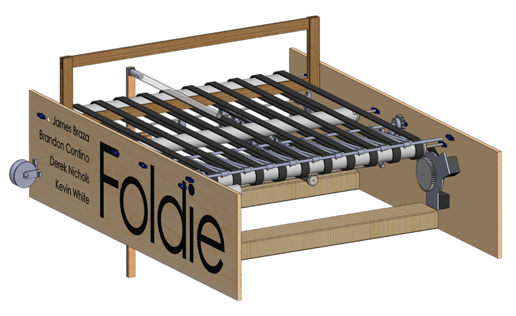
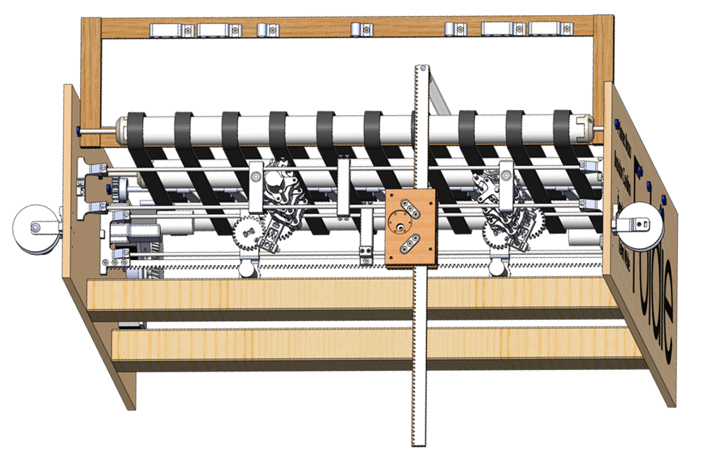
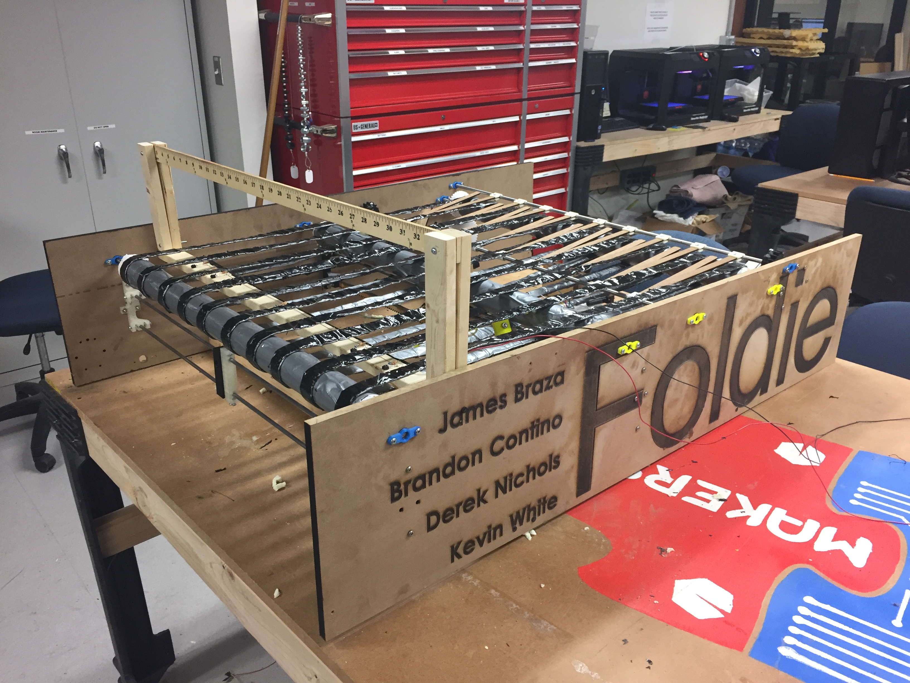
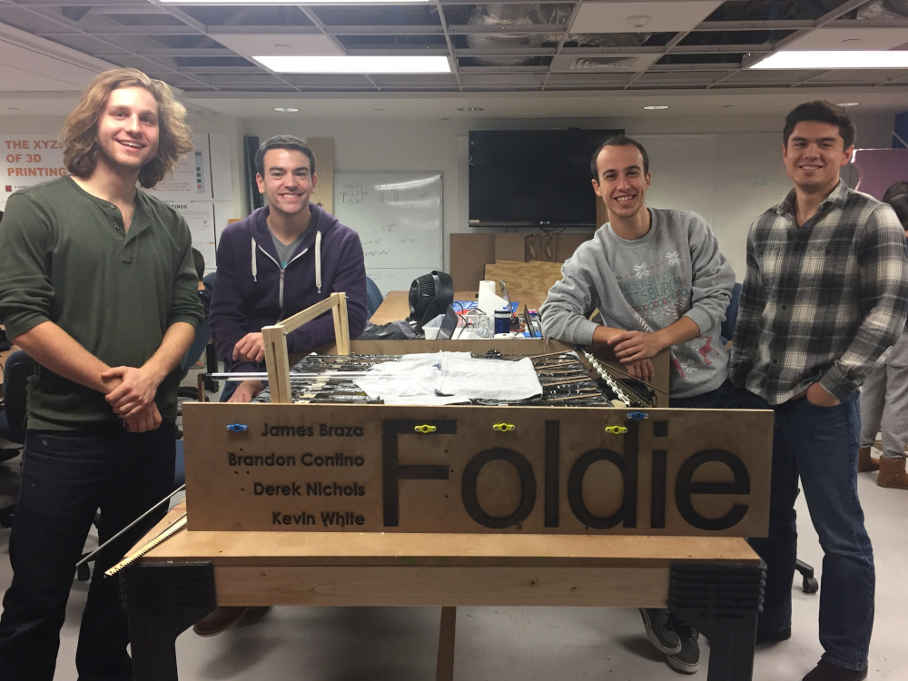
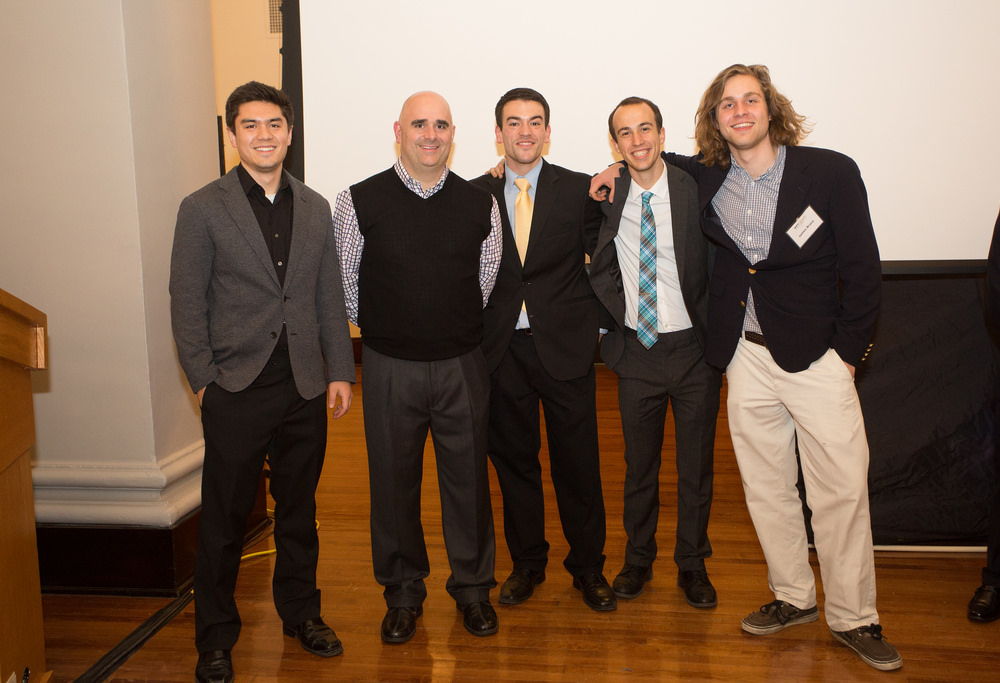

Foldie - The Laundry Folding Robot
I took Senior Design the fall semester of my senior year at Pitt; however, my group joined and started forming ideas for a self-lead and interdisciplinary project starting the spring semester of our junior year. We started thinking of problems that have yet to be addressed and realized that laundry folding is a problem that takes up a substantial amount of time in our lives (approx. 60 days of your life will be spent folding clothes) and has yet to be completely solved on a residential level, and for this reason, we decided that it was an issue that we would try to tackle.
We started brainstorming potential ideas that summer and came up with over 100 ideas (some which seemed feasible and some that didn't) on how we could orient and fold laundry. Orienting was a much larger challenge than we initially anticipated, so we decided to limit our scope to simply folding. We decided to use a design incorporating conveyor belts and two different folding apparatus - one to fold an item along its length and one to fold along its width. The design that we chose to move forward with after the brainstorming phase can be seen below:
This chosen design included a "circle folder" which folds items along its length, an "egg slicer" which folds along the width, a separate sleeve folder, and a chute and tray exit method. Even though we had finally settled on a design, we still had a lot of work to do. Each aspect of the design still had to be iterated and designed for 3D printing and fabrication. Even though we thought that we had a perfect design, we ran into a lot of problems. Fabrication led to the realization that many of the components need to be changed, and the finished design was almost entirely different. Shown below is the final manufactured design:
|  |  |
|  |
Even though our scope was much larger than any other senior design project while our budget was much smaller, we won three awards for our robot: best presentation, 2nd overall in mechanical engineering and materials science, and 2nd overall in electrical and computer engineering. Our drive and hard work lead the professor of senior design, Dr. David Schmidt, to ask our group to become UTAs for Senior Design and its prequel course where we mentored student groups, created learning tools and lesson plans for the classes, and helped to make MEMS senior design an all-around better experience. We were also the project sponsors for groups that continued to work on Foldie.
|  |  |
| Extra Documentation |
|---|
| Project Binder |
| Poster |
| Paper On Our Mentorship and Legacy |